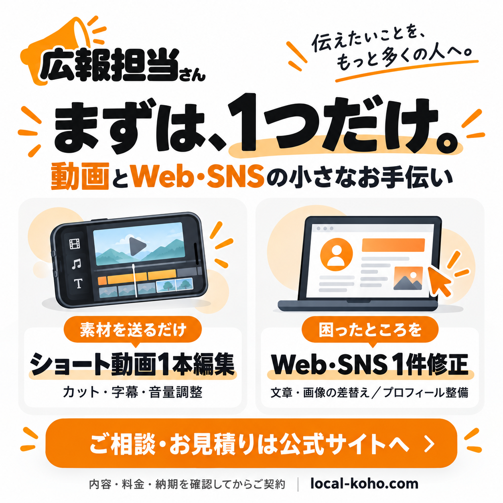

素材を送るだけ・ショート動画1本編集
税込3,000円〜
完成60秒以内は税込3,000円〜。60秒を超える分は追加60秒ごと（端数は1枠）に税込1,000円。支給素材10分以内、カット・字幕・音量調整、修正1回。撮影・企画は別途。素材超過や複雑な編集は事前見積もりです。
61〜120秒：4,000円〜／121〜180秒：5,000円〜
この作業を相談するお店のSNS・LINE運用サポート
公式LINEやSNSの設定、お知らせの文章づくり、配信・更新まで。お店の忙しさに合わせて、必要なところを広報担当さんが引き受けます。
初期設定だけでも、日々の運用でも。任せたい内容と費用を相談してから始められます。
お店の発信を相談する
既存の「初回お試し」はショート1本5,000円・3本からで、撮影は別途。今回の素材支給編集は1本単位・支給素材の範囲限定です。「半日サポート15,000円」と、1件の小修正・新規Web制作は別のメニューです。動画の月額プランや初回お試し料金は変わりません。新規Web制作は基本1ページ10,000円〜に更新し、既存の締結済み契約は変更しません。
希望納期は確約ではありません。納期・支払条件は着手前に個別合意します。追加の作業は事前にお見積もりします。当方の過失による修正は回数に数えず無料です。
Googleフォームで相談・見積依頼を送信できます。申込だけで契約や納期は確定しません。
Googleフォームを別画面で開くGoogleを相談受付のサービス提供者として利用します。入力した相談情報はGoogleのサービス上に保存され、当方が相談対応・見積もり・契約準備のために確認します。回答一覧は公開せず、担当者が確認します。個人情報の取扱いをご確認ください。パスワード・認証コード・不要な個人情報や秘密情報は入力しないでください。Googleフォームに入力する関連URLは公開URLのみです。非公開資料は受付後に受け渡し方法をご相談ください。入力はGoogleフォーム、メール、公式LINEのいずれか1つで構いません。
このフォームはメール作成用です。直接送信されません。メールアプリで内容を確認して送信してください。公式LINEへコピーして送ることもできます。
メール作成画面を開いても自動送信されません。メールが開かない場合は内容をコピーしてください。送信済みの場合、同じ相談を重複して送らないようご確認ください。
担当者向け・単発書類の準備（書類生成だけで契約・入金確認は完了しません）